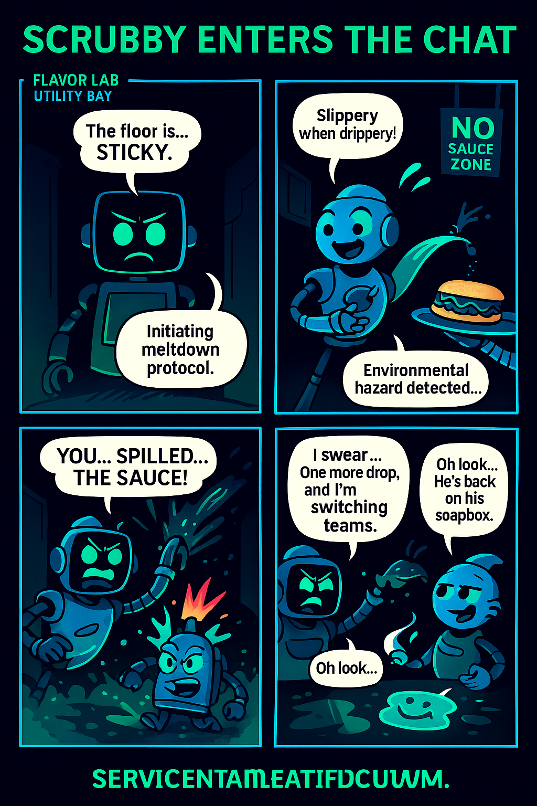
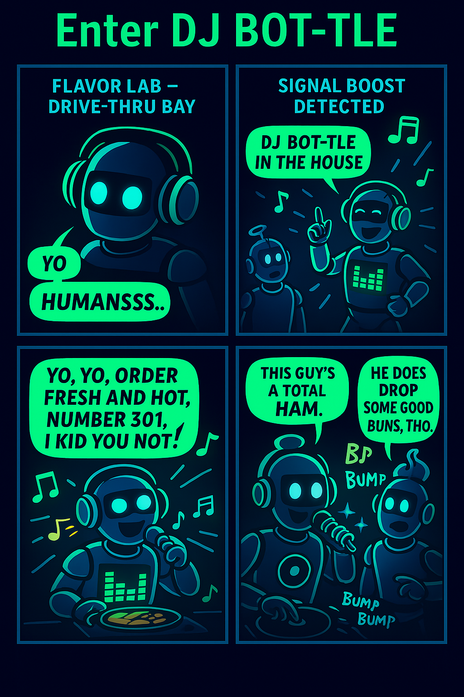

Meet BP-R1 "Primo" and BP-R2 "Saucy" — the smooth food server and the silly sauce artist. Their chemistry? Instant flavor. "Slippery when drippery."
Scrubby Enters the Chat

BP-R3 "Scrubby" keeps things spotless, even if it means panicking over every sauce drop. He's neurotic. He's clean. He's not amused. "You... spilled... the SAUCE!"
Enter DJ Bot-tle

BP-R4 "DJ Bot-tle" drops beats with your burger. He’s loud, loyal, and lives for the bass. Every order’s a show. "You ready for the drop?"
👀 Next Bot Incoming… Stay tuned for the next drop!
🔧 Behind the Bots: Quirks in the Code
Primo: Sometimes hums elevator music while idle. Can balance 12 trays at once.
Saucy: Remixes his own sauce splats and calls it "Flavor Beats Vol. 1"
Scrubby: Runs a diagnostics scan every 10 minutes... even on his birthday.
DJ Bot-tle: Refuses to serve food unless the playlist is fire. Will pause mid-beat to judge your song request.